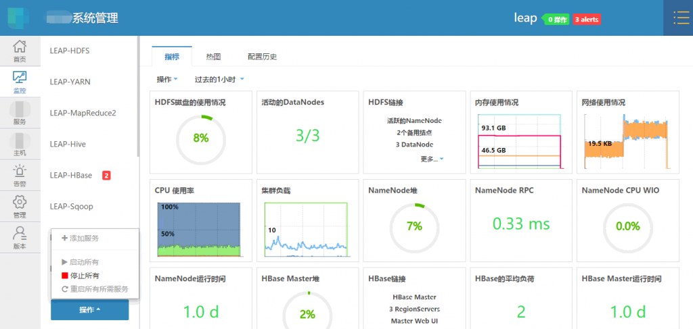
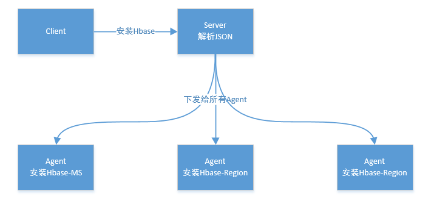
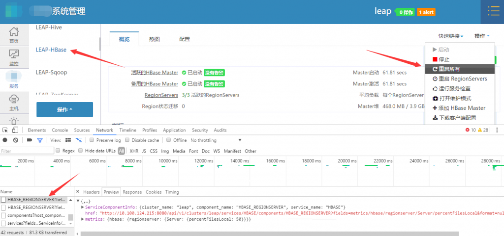
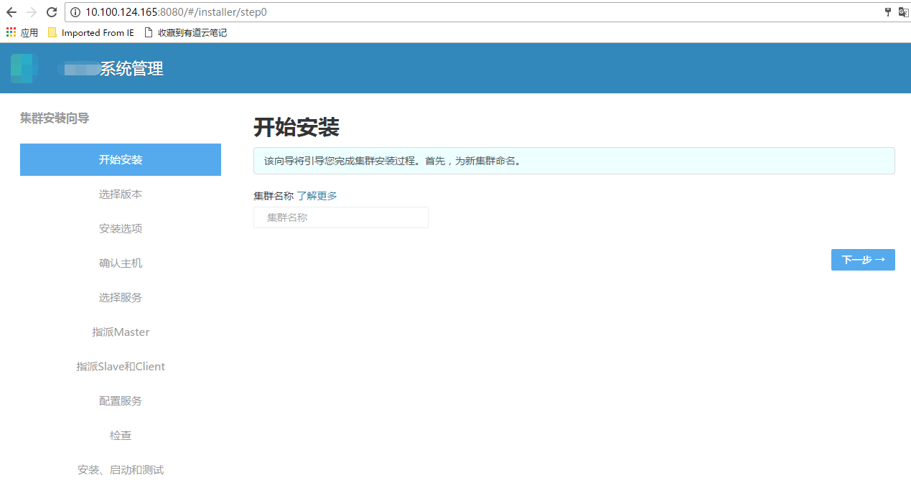

Ambari - 三条命令创建集群#
什么是 Ambari#
Ambari 是大数据生态圈中的一员，但它不是一个大数据计算引擎，而是一个管理工具，用来管理其它大数据工具，如：Hadoop、Spark、Hive 等，当你用 Ambari 作为你的管理工具时，它可以帮你监视你的集群状态、每个组件状态、节点状态等，如下图（这个不是 apache 官方版，所以请原谅我打点马赛克）：  它还可以为你的集群增加或删除一个组件，比如，你的集群没有 Storm，而现在你可以通过 Ambari 来添加它，只需动一动鼠标即可完成。
原理简介#
它是一个经典的主从架构的分布式的软件，主要由 Ambari-Server 与 Ambari-Agent 两部分组成，架构图如下：  以上是用户为集群添加一个组件（Hbase）的过程，用户在前端进行的所有操作都是通过 REST API 调用后台 Ambari 的，我们可以用浏览器抓包看一下： 
Ambari Bleprint 作用#
我们先来看一下用 Ambari 创建一个集群的步骤，当在一台机器上安装好 Ambari 后，进入它的 WEB UI，这时出现一个集群创建向导，如下：

这个向导还是很方便的，其中有添加主机，选择要安装的组件等功能。 而 Ambari Bleprint 可以看作是 Ambari 本身提供的一个功能，它的作用是：可以让用户免去 Ambari 的集群安装向导操作，可以让用户把安装集群的所有步骤脚本化，这是个很有用的场景，而它的基本原理就是通两个 JSON 文件来描述一个集群，如下：
 图中左边是两个 JSON 文件，它们被通过 REST API 的方式发送给 Ambari-Server ，再由 Ambari-Server 创建出一个集群。
图中左边是两个 JSON 文件，它们被通过 REST API 的方式发送给 Ambari-Server ，再由 Ambari-Server 创建出一个集群。
Ambari Bleprint 的使用#
用 Ambari Bleprint 创建一个集群大概分为6步：
- 安装好 Ambari 在你的主机上
- 准备 JSON 文件，它们用来描述创建什么样的集群，以及组件配置
- 向 Ambari 注册 Blueprint
- 修改 yum 源（可选步骤）
- 用注册的 Blueprint 创建集群
- 获取进度信息
安装好 Ambari 在你的主机上#
安装方法请参见官网，写的已经很清楚了：https://cwiki.apache.org/confluence/display/AMBARI/Installation+Guide+for+Ambari+2.4.2
假设你有三台机器：node1.ambari.com, node2.ambari.com, node3.ambari.com, 第一台安装 Ambari-Server ，其它两台安装 Ambari-Agent。
准备 JSON 文件#
- 第一个 JSON 文件（my_cluster.json），用来描述安装哪些组件，如：Hadoop、Hbase、Zookeeper 等，以及每个组件的配置，下面是一个简单的例子：
{
"host_groups" : [
{
"name" : "master",
"components" : [
{
"name" : "NAMENODE"
},
{
"name" : "SECONDARY_NAMENODE"
},
{
"name" : "RESOURCEMANAGER"
},
{
"name" : "HISTORYSERVER"
},
{
"name" : "ZOOKEEPER_SERVER"
}
],
"cardinality" : "1"
},
{
"name" : "slaves",
"components" : [
{
"name" : "DATANODE"
},
{
"name" : "HDFS_CLIENT"
},
{
"name" : "NODEMANAGER"
},
{
"name" : "YARN_CLIENT"
},
{
"name" : "MAPREDUCE2_CLIENT"
},
{
"name" : "ZOOKEEPER_CLIENT"
}
],
"cardinality" : "1+"
}
],
"Blueprints" : {
"blueprint_name" : "multi-node-hdfs-yarn",
"stack_name" : "HDP",
"stack_version" : "2.4"
}
}这个 JSON 串是相当长的，那要安装一个包含很多组件的集群，怎么办？最简单的办法就是从一个已有的集群中导出 JAON 串，并保存在文件中，假设我现在已有一个集群，其 Ambari-Server 的 IP 地址为 10.100.100.101，其集群名叫 my_cluster 那么导出令如下：
[user@host1 ~]$ curl -H "X-Requested-By: ambari" -X GET -u admin:admin \
http://10.100.100.101:8080/api/v1/clusters/my_cluster?format=blueprint > my_cluster.json这时 my_cluster.json 内就已包含了这个集群的所有信息。 2. 第二个 JSON 文件（host.json），是用来告诉 Ambari 哪些组件安装在哪个主机上，下面是一个示例：
{
"blueprint" : "blueprint_name",
"default_password" : "my-super-secret-password",
"host_groups" :[
{
"name" : "master",
"hosts" : [
{
"fqdn" : "node1.ambari.com"
}
]
},
{
"name" : "slaves",
"hosts" : [
{
"fqdn" : "node2.ambari.com",
"fqdn" : "node3.ambari.com"
}
]
}
]
}- 第三个 JSON 文件（repo.json），它用来告诉 Ambari 要安装的组件的安装包在哪里，这一步可略，Ambari 默会用网上的公共源来下载安装，这个 JSON 示例如下：
[user@host1 ~]$ cat repo.json
{
"Repositories" : {
"base_url" : "http://my.repo.com/all_rpm",
"verify_base_url" : false
}
}向 Ambari 注册 Blueprint#
这里要用到第一个 JSON 文件，执行如下命令：
[user@host1 ~]$ curl -H "X-Requested-By: ambari" -i -X POST -u admin:admin \
-d @my_cluster.json \
http://node1.ambari.com:8080/api/v1/blueprints/bluesingle?validate_topology=false说明： -H Ambari 特定的请求头 -u 是 Ambari 的用户名与密码 -d 是指 http 请求附带的数据
修改 yum 源（可选）#
如果你有自已的 repo 源，可以修改为自的的源，这里要用到第三个 JSON 文件，命令如下：
[user@host1 ~]$ curl -u admin:admin -H "X-Requested-By: ambari" -i -X PUT \
-d @repo.json \
http://node1.ambari.com:8080/api/v1/stacks/HDP/versions/1.0/operating_systems/redhat6/repositories/$repo_name说明： $repo_name 是 Ambari 内置的源的名字，也就是说我们要把哪个源修改为我们自己的源
开始创建集群#
这时候用到第二个 JSON 文件：
[user@host1 ~]$ curl -u admin:admin -H "X-Requested-By: ambari" -i -X POST \
-d @host.json \
http://node1.ambari.com:8080/api/v1/clusters/cluster_name这时候它就开始创建集群了，要等待较长时间，在返回的数据里面有一个 href，记下来。
监视安装进度#
这时用上一步返回的 hred 可以查看进度信息：
[user@host1 ~]$ curl -u admin:admin -H "X-Requested-By: ambari" -X GET $href
{
"aborted_task_count": 10,
"cluster_name": "leap",
"completed_task_count": 155,
"create_time": 1487360660489,
"end_time": -1,
"exclusive": false,
"failed_task_count": 1,
"id": 1,
"inputs": null,
"operation_level": null,
"progress_percent": 94.31515151515151,
"queued_task_count": 3,
"request_context": "Logical Request: Provision Cluster 'leap'",
"request_schedule": null,
"request_status": "FAILED",
"resource_filters": null,
"start_time": -1,
"task_count": 165,
"timed_out_task_count": 0,
"type": null
}
...其中 progress_percent 后面就是当前的安装进度，还可以看到安装状态等等。 这时还可以进入 Ambari 的 WEB UI ，也可以看到进度信息。 安装步骤也就到此结束了，如果你需要一个自动化的集群安装过程，或是你正在开发调试大数据组件，这篇文章也许也可帮到你，祝你工作愉快。